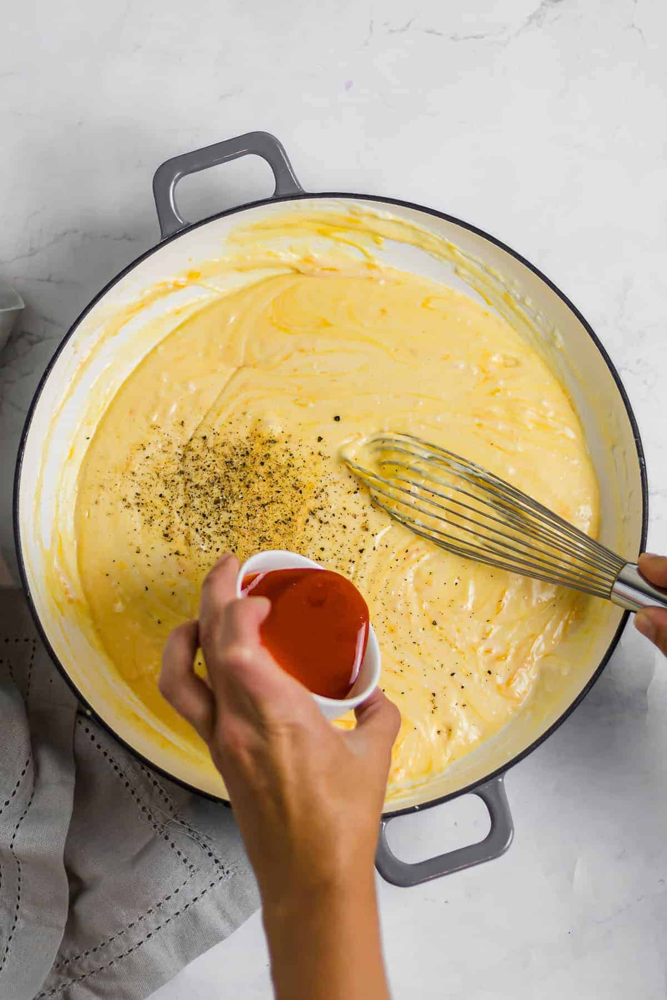

Cheese Roux
Cheese Roux for Mac n' Cheese
Homepage

Mac and Cheese Roux that goes with many pasta dishes!
The best cheese roux for pasta based dishes! This is my favorite recipe for cheese roux
and I add it to my pasta regularly. The recipe is intended for mac n cheese but I always throw in a bunch of veggies and
meat along with assorted seasonings to spice things up a great deal.
Ingredients
- 2-2 1/2 cups of milk
- 1/2 cup all purpose flour
- 1 tsp salt
- 1 stick unsalted butter
- 2 cups of cheese
- 1/2 tsp cracked black pepper
Steps
- Boil pasta according to its directions.
- Melt butter on medium-high heat.
- Whisk in flour and stir ocassionally for 3 min.
- Whisk in milk after roux darkens. Once mixed in set heat to simmer.
- Add in cheese and let melt into roux. Stir.
- Mix into pasta.